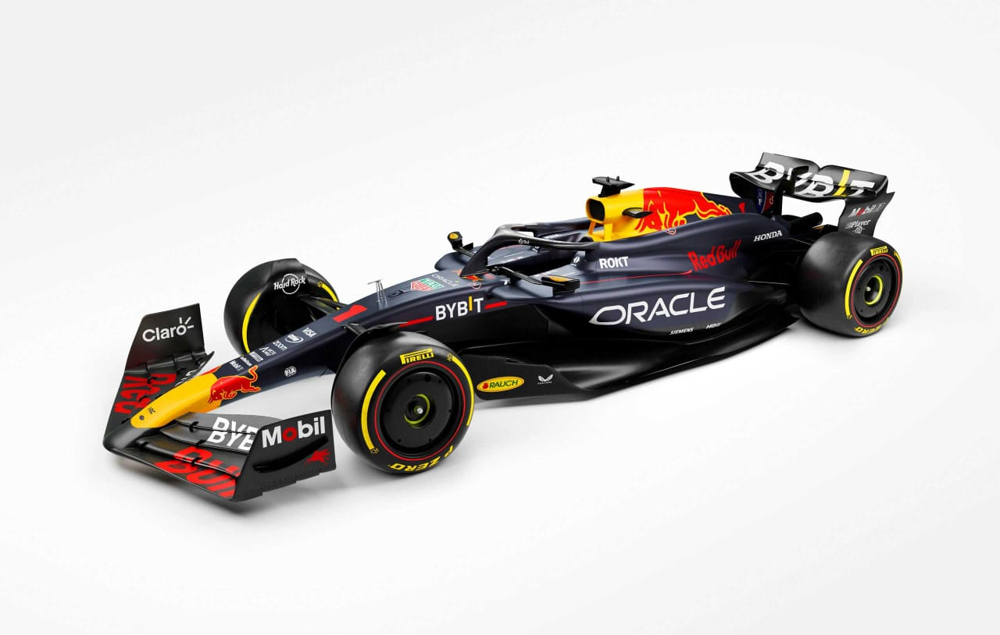

Últimas Noticias
¿El RB20 podra seguir dominando?
Durante la temporada 2023 el RB19demostro ser el mejor auto de toda la parrilla logrando ganar 21 de las 22 carreras pero ¿podra el actual RB20 ser tan dominate como su antecesor? esto y mas lo veremos a continuacion.
Leer más¿Seguira Checo en Red Bull?

Durante la temporada 2023 el Mexicano Sergio (Checo) Pérez demostro su talento al obtener el segundo lugar del campeonato de pilotos solo por detras de su compañero de equipo Max Verstappen . pero se han esparcido los rumores de ser reemplazado por Yuki Tzunoda quien tuvo un gran rendimiento en Alpha Tauri.
Leer más